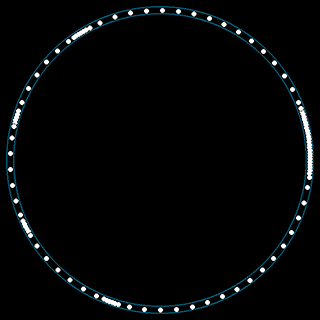
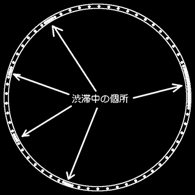

1999年8月20日
行楽シーズンには、高速道路に渋滞の長い列ができます。渋滞の先頭は、 事故や工事だったり、観光地のインターチェンジだったり、 あるいはトンネルだったりします。ところが、交通情報で聞く渋滞はいつも同じ場所で、 どこどこサーピスエリアとか何々トンネルとかの名所になっています。 事故で車線がふさがった時に渋滞になるのは当然として、 同じ場所でいつも渋滞になるのは不思議に思いませんか？
渋滞名所の特徴は、トンネルや峠が多いということです。 トンネルでは安全のために（あるいは無意識に）スピードを少し落とします。 坂道では上りでは少し遅くなり、下りでは少し速くなります。 このほんの少しの減速が渋滞の原因でしょうか？ ちょっと考えただけでは、 トンネルの近くでみんながそろって減速するだけで、 止まってしまうほどの渋滞になるとは想像できません。
おわんのようなへこんだ所にボールを置いてみましょう。 ボールをつついても元へ戻ってきます。これが道路がすいている時の状態です。 ところが、ボールそのままにして周囲を掘ってやると、 ボールが丘の上にあることになります。これが渋滞が起きる直前の状態です。 ボールを少しつついただけでも、ころがって溝にはまってしまいます。 このように丘の頂上のような不安定な状態の時には、 ちょっとしたことで全然違う状態に変化することがあります。これが相転移です。
相転移という現象は身の回りにもたくさんあります。例えば、 水を静かに静かに冷やすと０度以下でも凍らない過冷却という状態になります。 でもこの状態は不安定で、ちょっとした衝撃で一瞬にして氷に変わります。 宇宙に興味のある人は、宇宙全体も過去に相転移を起こしたという話を 知っているかもしれません。
相転移は不安定な時には必ず起こります。そうならないためには 安定な状態に戻す必要があります。自動車の場合は数を減らすことですが、 それは簡単にはできないので、渋滞は避けられません。渋滞にはまってしまったら、 宇宙のことでも考えながら気長に待ちましょう。
2000年12月25日
花見に出かけた長屋のご隠居と源さん、渋 滞中の高速道路で何やら話をしております。 源さん（以下源）「ご隠居、どうしてこうも 渋滞ばっかりなんですかねえ」 ご隠居（ご）「そりゃ自動車が多いからだ」 源「そういうことでなくって」 ご「なんでこんなに混むかってことかい」 源「そうそう」 ご「気候も良いし、行楽シーズンだからかな」 源「でなくて、この渋滞はなんとかならんか なってことですよ」 ご「ん、一番いいのは出かけないってことだ」 源「そりゃご無体な。あたしも花見ぐらいは 行きたいってもんです」 ご「じゃあ、違う時期に行ったらどうだい」 源「ていうと」 ご「真夏とか真冬とか」 源「葉桜はどうもねえ。それにあたしは寒い ところは嫌いなんで」 ご「文句の多いやつだな。ようするに渋滞に 合わずに花見に行きたいってんだろ」 源「そう、それそれ」 ご「それは無理だな。考えてもみなさいな。 普段はあちこちに散らばってる自動車が みーんな一ヶ所に押し寄せたら、ぎゅう ぎゅう詰めになるのが当たり前だ」 源「そりゃそうですけど・・・」 ご「車がもう少し少なければなんとかなる」 源「ていうと？」 ご「インターで詰まっちゃうのはしかたない。 通るのに時間がかかるからな」 源「外国みたいにタダならいいんですがね」 ご「でも、ここはインターじゃない」 源「そうそう、こんな何の変哲もない所で何 で渋滞になっちゃうんでしょうね」 ご「最近の研究では不安定性が原因らしいな」 源「ふあん亭？ラーメン屋か何かですか？」 ご「ラーメン屋でも落語家でもない。安定 じゃないってことだ」 源「へ？」 ご「安定っていうのはずっとそのままってこ と。不安定っていうのはなんかの拍子にガ タガタすることだ」 源「うちのちゃぶ台もガタガタしますけど、 あれが不安定ってこと？」
ご「ちょっと違うがまあそんなとこだ」 源「タイヤがガタガタするってことですか」 ご「そうじゃない。スピードが速くなったり 遅くなったりするってことだ」 ご「例えばだな、車間が50ｍなら時速100 キロで走るとしよう。車間が25ｍになっ たら、危ないからお前さんもスピードを遅 くするだろ？そういう時はみんな一斉に 50キロで走ればＯＫだと思うだろ」 源「違うんですか？」 ご「そうすると不安定性ってのが顔を出す」 源「どこから？ 下は道路ですけど」 ご「黙って聞きなさい。高速道路を50キロ で走るのは不安定ってことだ。なんかの拍 子に、例えば向かい風とかの、ちょっとし たことが原因でスピードが落ちると・・・」 源「へー、向かい風でねえ。あたしは全然気 が付きませんけど？」 ご「そう。気が付かないうちにスピードが ちょっと遅くなると・・・」 源「そしたら置いてかれちゃいますぜ」 ご「だから、次はちょっとアクセルを踏む」 源「そうですな」 ご「後ろの自動車も同じように遅くなったり 速くなったりする。そういうわけでスピー ドがガタガタするわけだ」 源「するとどうなります？」 ご「そのうち、つまり後ろの車ほどガタガタ が大きくなって、終わりには止まってしま うほどになる。こうして渋滞ができる」 源「へぇーっ。そんなもんですか」 ご「そんなもんだ。こういうのはコンピュー タシミュレーションで実際に見える」 源「こ、コンプータシュミレーション？」 ご「シュミじゃない。シミュレーション」 源「言いにくい言葉ですねえ」 ご「← 実際の画像はこちら ←」 源「へ、どちら？」
 
2004年7月12日
もちろん第一の原因は自動車が多いことです。普通の場合、つまり インターチェンジとか、２車線道路が急に１車線になるとか、そういう状況の 場所にたくさんの自動車が走ってくれば、そこで詰まってしまうのは明らかです。 入ってくる自動車が少なければ、そういう場所でもそれほど問題なく 走れるわけです。こんな風に自動車が詰まる原因になる場所をボトルネックと 言います。ビンの首が細くなっていると、それが原因で中身がなかなか出ない、 という意味です。
ところが、お盆のころの高速道路情報を聞いていると、よく 「東郷パーキング付近321キロポストを先頭に何キロの渋滞」とか言っています。 あの辺にはインターとかはなくて、まあ普通の道です。でも渋滞の名所に なっている。それはなんでか、というと実はゆるい上り坂があるんです。 上り坂では普通に走っても自動車のスピードが少し落ちるわけです。それは 合流する車を入れてやるために、少し減速するというのと同じような効果が あります。だから上り坂とかカーブとかトンネルとか景色が良いとか、 スピードを少しでも変化させるようなものは全部、ほんの少しかもしれないけれど、 ボトルネックみたいなものなわけです。例えば、道路の反対車線で事故があると、 自分の方の車線には何もなくても、わき見渋滞とか発生しますよね。運転中に 横を向くと、ほんの少しだけアクセルがゆるんで減速するのが原因に なっているわけです。
じゃあ、そんなちょっとした原因で、なぜ渋滞ができるのか。それが実は 物理学で説明できるんだ、というのが私のやっている仕事です。人間が 運転する自動車のことが物理学なんかでわかるのか、と思うかもしれませんが、 実際にドライバがしていることは、大雑把にいうと、前の車が出たら自分も 加速して、車間が詰まったら減速するということです。だからやっていることは 機械と大差ない。それで、混んでる時の運転はというと、車が多いから車間は 詰まる、でも早く行きたいから速度は速いまま、ということになっています。 そういう時は少し車間が詰まると危ないからすぐ減速、間があくと加速、 というような微調整をがんばらないといけない。それはかなりつらい運転ですよね。 そういう状況は物理学では不安定と言います。例えて言うと、ロープに ぶら下がっているロープウェイは、少しぐらい揺れても大丈夫です。これを 安定な状態と言います。でも、ロープの上で綱渡りをしている時は、 ちょっとバランスを崩すと落っこちてしまうので、大変な思いをして 微調整しないといけない、これが不安定な状態です。渋滞になる直前は この綱渡り状態です。だから運転がつらい。ちょっとゆれただけで、 バランスを崩して落っこちてしまう。だから、そういう状況になったら、 実はたいした原因なんかなくても勝手にバランスがくずれて渋滞はできる。 ちょっと太陽がまぶしかったから渋滞、ということもありえます。
一方、落っこちた状態は渋滞ができた状態です。それはもうどうこうしたって 変わるものではないので、安定な状態です。つまりいったん渋滞になってしまうと、 もう元には戻せない。車が減るまでは。だから渋滞にならないようにすることが 重要です。そうするためには不安定にならないようにするしかありません。 不安定になってしまうと必ず渋滞ができてしまうので。それで、方法は２つ。 一つは車を減らすこと。でも普通はこれはできないので、その場合は、速度を 落とす。つまり、速く走ろうとすると不安定になるので、混んできたら速度を 落とせばよい。そうすると運転が楽になります。すいてると100キロで走れる道は、 ２倍混んでいる時には50キロで走る。渋滞になってしまった道を100キロで 走っては止まり走っては止まりしても、50キロでトロトロ走っても、実は 掛かる時間は同じくらいということもわかってます。燃費もよくなりますし。 ようするに、すいていた頃を思い出してはいけないということです。 混んでるときは仕方ない、ゆっくり行こう、とみんなが思えば渋滞はできません。